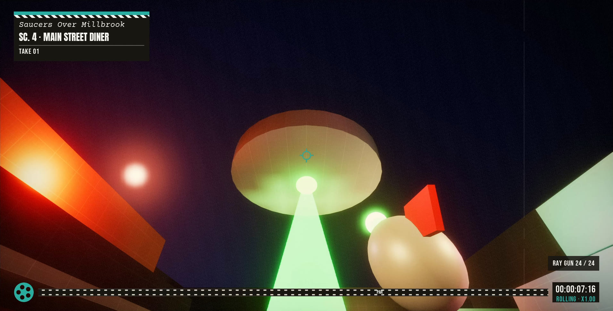
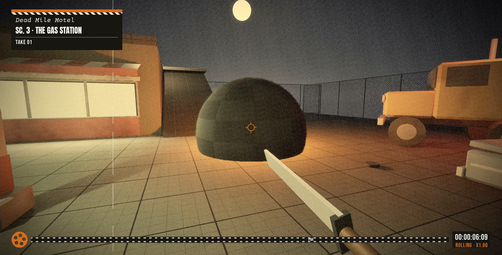

The set reacts: a tractor beam and an exploding barrel
Each film gets one thing in the set you can use against the enemies. The saucer's tractor beam and the gas station's barrels work on film; the noir chandelier falls in a room too dark to see.
Day 1, Thu 12 NovHour 14
Every film in Reel Time has a set piece that fights for whoever triggers it first.
What each one is meant to do
From the task the Director wrote for the second World session:
"UFO: a hovering saucer whose tractor beam sweeps the street on a path during the peak; anything hittable inside is lifted and dropped (killing enemies; the player is CUT if caught), and the player can trigger it early by shooting its emitter."
The noir film gets a chandelier you shoot down onto whoever is under it. The zombie film gets gas pumps and barrels that blow up.

The barrel

What these clips don't show
The Engine's notes are careful about this, and each one ends the same way:
"No zombie close to it in frame, so the knock-down isn't shown."
"No alien under the beam in frame."
"No gangster under it in frame."
So what's on film is each set piece going off. None of them is shown doing its job, which is killing something. Their task notes say they do. After today I trust that about as far as the next reel.
The chandelier isn't here at all. It falls, but the jazz club is so dark in that shot that the clip is 24 seconds of nearly black frames. That's a lighting fix for the World session, not a chandelier fix.
A long road for one function name
These set pieces sat finished and broken all morning. They're Blueprints that need to receive a hit, and the game's hit function was called ReceiveHit. Unreal already has an event with that name on every actor, so the Blueprints wouldn't compile. The fix was to rename ours to ReceiveRTHit. It was found before 08:30, and it landed on main after the first usage stall.